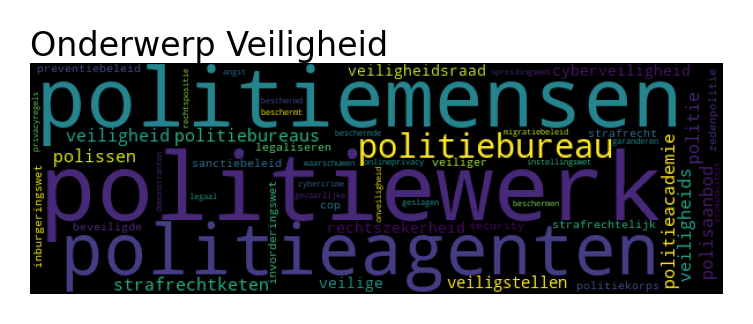
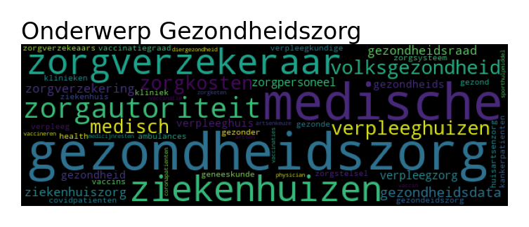
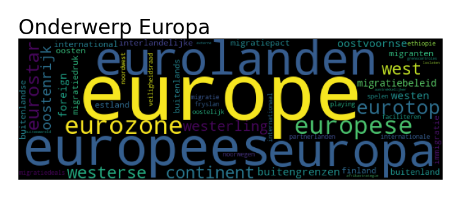
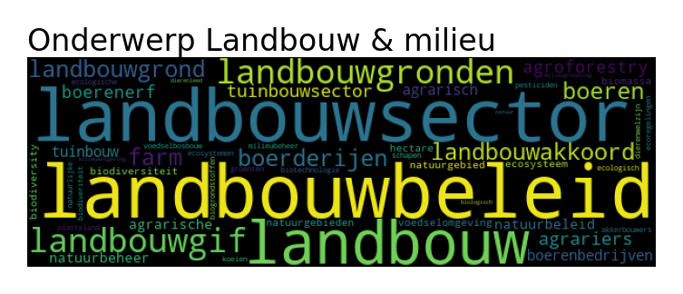
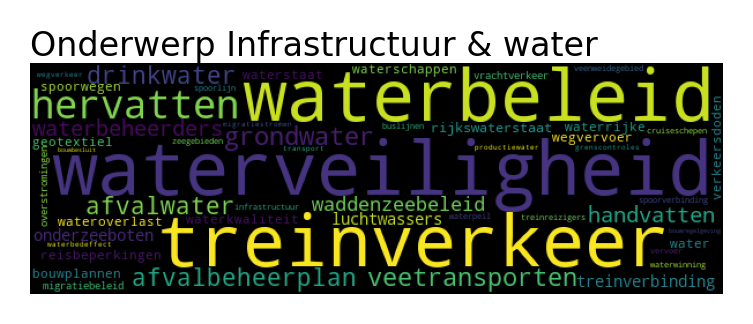
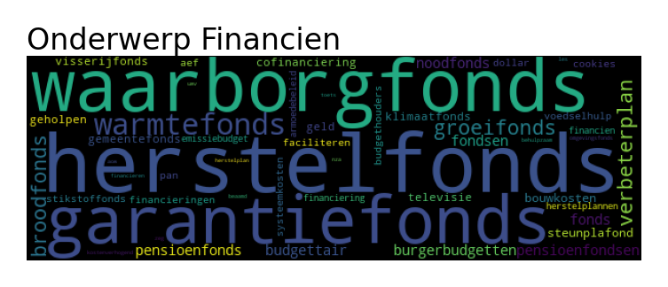
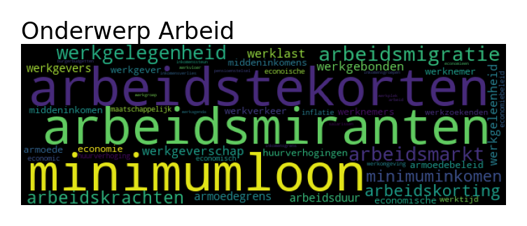
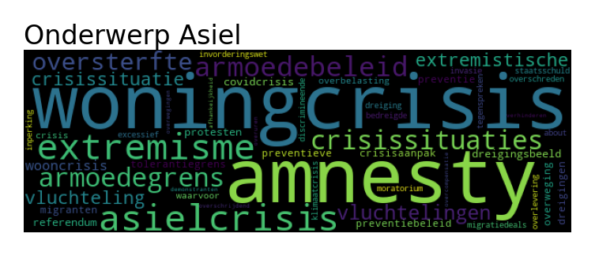
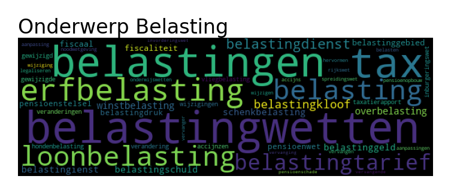

Deel 2 van het motie-onderzoek!
We kijken naar de onderwerpen waar de ingediende moties van afgelopen Kamerperiode over gaan. Top2Vec is een algoritme dat de moties kan clusteren naar onderwerp. Uiteindelijk zijn alle moties aan 82 onderwerpen toegewezen. Voor deze blog heb ik deze onderwerpen weer verder gegroepeerd naar 14 hoofdonderwerpen.
We onderzoeken de partijen en onderwerpen door op drie manieren naar de data te kijken:
- Welke partijen dienen het meeste moties in per onderwerp?
- Welke partijen hebben het meeste aangenomen moties per onderwerp?
- Welke partijen hebben het meeste aangenomen moties per onderwerp per zetel?
- Welke onderwerpen zijn speerpunten voor de partijen?
Onderstaande figuur geeft aan welke partijen het meeste moties indienen per onderwerp:
Voor het onderwerp ‘Landbouw en Milieu’ dient de PvDD het meeste moties in, gevolgd door BBB, D66 en GroenLinks. De standpunten van de partijen kunnen natuurlijk verschillen!
Maar het aantal ingediende moties is niet hetzelfde als het aantal aangenomen moties, dat laat de volgende figuur zien:
Als we kijken naar succesvolle moties dan zien we daar ineens vier partijen bovendrijven: CDA, ChristenUnie, D66 en VVD. De regeringspartijen, dat is logisch want die hebben een meerderheid.
Nu kijken we naar het aantal succesvolle moties per zetel:
Dit overzicht geeft weer hoeveel moties van een partij worden aangenomen per onderwerp per zetel. Het is weer een heel ander beeld: partijen als BBB, CU en DENK doen het goed. Dit zijn natuurlijk ook partijen met weinig zetels.
Waar richten de partijen zich op?
In bovenstaande grafieken hebben we de partijen onderling vergeleken. Nu kijken we per partij op welk vlak ze het meest actief zijn
Als een partij een hele grote bol heeft betekent dit dat de partij zich heel erg richt op dit onderwerp. Zoals bijvoorbeeld Volt op Europa. Als een partij grote bollen heeft dan is er geen duidelijk speerpunt en zijn de moties meer verspreid.
Stemgedrag op klimaat
Hieronder zie je het stemgedrag op klimaat. De afstand tussen de partijen geeft aan hoeveel ze verschillen. Hiermee kunnen we ~40% van het stemgedrag verklaren.
Als we er nog een tweede as bij zetten kunnen we 60% van de variatie verklaren:
Het lijkt me vooral interessant wat de standpunten van Omtzigt zijn ten opzichte van klimaat. Dit zou zomaar eens kunnen bepalen welke kant het beleid op gaat kantelen.
Om gemakkelijk de moties te doorzoeken heb ik de MotieMachine gemaakt. Hier staan alle 82 onderwerpen in, inclusief een mogelijkheid om de moties door te lezen. Veel plezier ermee!
Bijlage: Wordclouds van de 14 onderwerpen









